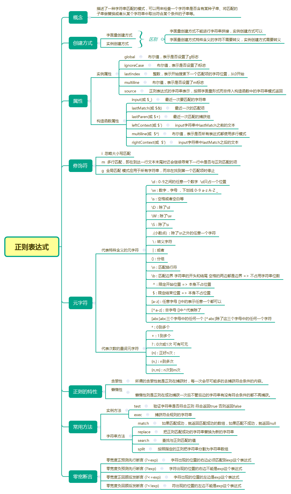

<!DOCTYPE html>
<html>
<head><meta name="generator" content="Hexo 3.8.0">
  <meta charset="utf-8">
  

  
  <title>正则表达式RegExp | Gzqqqqq</title>
  <meta name="viewport" content="width=device-width, initial-scale=1, maximum-scale=1">
  
  
  
  <meta name="description" content="RegExp 是正则表达式的缩写。 当您检索某个文本时，可以使用一种模式来描述要检索的内容。RegExp 就是这种模式。 定义 RegExp通过 new 关键词来定义 RegExp 对象。以下代码定义了名为 patt1 的 RegExp 对象，其模式是 “e”： 1var patt1=new RegExp(&quot;e&quot;); RegExp 对象的方法egExp 对象有 3 个方法：test()、exec(">
<meta name="keywords" content="正则表达式">
<meta property="og:type" content="article">
<meta property="og:title" content="正则表达式RegExp">
<meta property="og:url" content="http://Gzqqqqq.github.io/public/2019/03/29/正则表达式RegExp/index.html">
<meta property="og:site_name" content="Gzqqqqq">
<meta property="og:description" content="RegExp 是正则表达式的缩写。 当您检索某个文本时，可以使用一种模式来描述要检索的内容。RegExp 就是这种模式。 定义 RegExp通过 new 关键词来定义 RegExp 对象。以下代码定义了名为 patt1 的 RegExp 对象，其模式是 “e”： 1var patt1=new RegExp(&quot;e&quot;); RegExp 对象的方法egExp 对象有 3 个方法：test()、exec(">
<meta property="og:locale" content="default">
<meta property="og:image" content="http://gzqqqqq.github.io/public/2019/03/29/正则表达式RegExp/正则表达式.png">
<meta property="og:updated_time" content="2019-03-30T01:55:38.302Z">
<meta name="twitter:card" content="summary">
<meta name="twitter:title" content="正则表达式RegExp">
<meta name="twitter:description" content="RegExp 是正则表达式的缩写。 当您检索某个文本时，可以使用一种模式来描述要检索的内容。RegExp 就是这种模式。 定义 RegExp通过 new 关键词来定义 RegExp 对象。以下代码定义了名为 patt1 的 RegExp 对象，其模式是 “e”： 1var patt1=new RegExp(&quot;e&quot;); RegExp 对象的方法egExp 对象有 3 个方法：test()、exec(">
<meta name="twitter:image" content="http://gzqqqqq.github.io/public/2019/03/29/正则表达式RegExp/正则表达式.png">
  
    <link rel="alternate" href="/atom.xml" title="Gzqqqqq" type="application/atom+xml">
  
  
    <link rel="icon" href="/images/default-avatar.jpeg">
  
  
    <link href="//fonts.googleapis.com/css?family=Source+Code+Pro" rel="stylesheet" type="text/css">
  
  <link rel="stylesheet" href="/css/style.css">
  <link rel="stylesheet" href="/css/highlight.css">
</head>
</html>
<body>
  <div id="fullpage" class="mobile-nav-right">
    
      <div id="wrapper" title="图片来自网络">
    
    
      <header id="header">
  <div id="nav-toggle" class="nav-toggle"></div>
  <div class="head-box global-width">
    <nav class="nav-box nav-right">
      
        <a class="nav-item" href="/" title>首页</a>
      
        <a class="nav-item" href="/archives" title>归档</a>
      
    </nav>
  </div>
</header>
      <div id="middlecontent" title class="global-width sidebar-right">
        <section id="main"><article id="post-正则表达式RegExp" class="article global-container article-type-post" itemscope itemprop="blogPost">
  
    <header class="article-header">
      
  
    <h1 class="article-title" itemprop="name">
      正则表达式RegExp
    </h1>
  

    </header>
  
  <div class="article-meta">
    <a href="/2019/03/29/正则表达式RegExp/" class="article-date">
  <time datetime="2019-03-29T12:44:03.000Z" itemprop="datePublished">2019-03-29</time>
</a>
    
    
  <ul class="article-tag-list"><li class="article-tag-list-item"><a class="article-tag-list-link" href="/tags/正则表达式/">正则表达式</a></li></ul>

  </div>
  
    <span id="busuanzi_container_page_pv">
      本文总阅读量<span id="busuanzi_value_page_pv"></span>次
    </span>
  

  <div class="article-inner">
    
    <div class="article-content article-content-doorframe" itemprop="articleBody">
      
       
  	
  	  <p>RegExp 是正则表达式的缩写。</p>
<p>当您检索某个文本时，可以使用一种模式来描述要检索的内容。RegExp 就是这种模式。</p>
<h3 id="定义-RegExp"><a href="#定义-RegExp" class="headerlink" title="定义 RegExp"></a>定义 RegExp</h3><p>通过 new 关键词来定义 RegExp 对象。以下代码定义了名为 patt1 的 RegExp 对象，其模式是 “e”：</p>
<div class="highlight-box" autocomplete="off" autocorrect="off" autocapitalize="off" spellcheck="false" contenteditable="true" data-rel="BASH"><figure class="iseeu highlight /bash"><table><tr><td class="gutter"><pre><span class="line">1</span><br></pre></td><td class="code"><pre><span class="line">var patt1=new RegExp(<span class="string">"e"</span>);</span><br></pre></td></tr></table></figure></div>
<h3 id="RegExp-对象的方法"><a href="#RegExp-对象的方法" class="headerlink" title="RegExp 对象的方法"></a>RegExp 对象的方法</h3><p>egExp 对象有 3 个方法：test()、exec() 以及 compile()。</p>
<h3 id="test"><a href="#test" class="headerlink" title="test()"></a>test()</h3><p>test() 方法检索字符串中的指定值。返回值是 true 或 false。</p>
<div class="highlight-box" autocomplete="off" autocorrect="off" autocapitalize="off" spellcheck="false" contenteditable="true" data-rel="BASH"><figure class="iseeu highlight /bash"><table><tr><td class="gutter"><pre><span class="line">1</span><br><span class="line">2</span><br><span class="line">3</span><br></pre></td><td class="code"><pre><span class="line">var patt1=new RegExp(<span class="string">"e"</span>);</span><br><span class="line"></span><br><span class="line">document.write(patt1.test(<span class="string">"The best things in life are free"</span>)); //<span class="literal">true</span></span><br></pre></td></tr></table></figure></div>
<h3 id="exec"><a href="#exec" class="headerlink" title="exec()"></a>exec()</h3><p>exec() 方法检索字符串中的指定值。返回值是被找到的值。如果没有发现匹配，则返回 null。</p>
<div class="highlight-box" autocomplete="off" autocorrect="off" autocapitalize="off" spellcheck="false" contenteditable="true" data-rel="BASH"><figure class="iseeu highlight /bash"><table><tr><td class="gutter"><pre><span class="line">1</span><br><span class="line">2</span><br><span class="line">3</span><br></pre></td><td class="code"><pre><span class="line">var patt1=new RegExp(<span class="string">"e"</span>);</span><br><span class="line"></span><br><span class="line">document.write(patt1.exec(<span class="string">"The best things in life are free"</span>)); //e</span><br></pre></td></tr></table></figure></div>
<h3 id="compile"><a href="#compile" class="headerlink" title="compile()"></a>compile()</h3><p>compile() 方法用于改变 RegExp。</p>
<div class="highlight-box" autocomplete="off" autocorrect="off" autocapitalize="off" spellcheck="false" contenteditable="true" data-rel="BASH"><figure class="iseeu highlight /bash"><table><tr><td class="gutter"><pre><span class="line">1</span><br><span class="line">2</span><br><span class="line">3</span><br><span class="line">4</span><br><span class="line">5</span><br><span class="line">6</span><br><span class="line">7</span><br></pre></td><td class="code"><pre><span class="line">var patt1=new RegExp(<span class="string">"e"</span>);</span><br><span class="line"></span><br><span class="line">document.write(patt1.test(<span class="string">"The best things in life are free"</span>)); //<span class="literal">true</span></span><br><span class="line"></span><br><span class="line">patt1.compile(<span class="string">"d"</span>);</span><br><span class="line"></span><br><span class="line">document.write(patt1.test(<span class="string">"The best things in life are free"</span>));//<span class="literal">false</span></span><br></pre></td></tr></table></figure></div>
<h3 id="正则的使用环境"><a href="#正则的使用环境" class="headerlink" title="正则的使用环境"></a>正则的使用环境</h3><h3 id="search-方法"><a href="#search-方法" class="headerlink" title="search()方法"></a>search()方法</h3><p>用于检索字符串中指定的子字符串，或检索与正则表达式相匹配的子字符串，并返回子串的起始位置。</p>
<p>search 方法可使用字符串作为参数。字符串参数会转换为正则表达式：</p>
<p><strong>i</strong> 表示不区分大小写<br><div class="highlight-box" autocomplete="off" autocorrect="off" autocapitalize="off" spellcheck="false" contenteditable="true" data-rel="BASH"><figure class="iseeu highlight /bash"><table><tr><td class="gutter"><pre><span class="line">1</span><br><span class="line">2</span><br><span class="line">3</span><br></pre></td><td class="code"><pre><span class="line">var str = <span class="string">"Visit Runoob!"</span>;</span><br><span class="line">var n = str.search(<span class="string">"Runoob"</span>);   //6</span><br><span class="line">var n = str.search(/Runoob/i);  //6</span><br></pre></td></tr></table></figure></div></p>
<h3 id="replace-方法"><a href="#replace-方法" class="headerlink" title="replace()方法"></a>replace()方法</h3><p>用于在字符串中用一些字符替换另一些字符，或替换一个与正则表达式匹配的子串。</p>
<div class="highlight-box" autocomplete="off" autocorrect="off" autocapitalize="off" spellcheck="false" contenteditable="true" data-rel="BASH"><figure class="iseeu highlight /bash"><table><tr><td class="gutter"><pre><span class="line">1</span><br><span class="line">2</span><br></pre></td><td class="code"><pre><span class="line">var str = document.getElementById(<span class="string">"demo"</span>).innerHTML;</span><br><span class="line">var txt = str.replace(/microsoft/i,<span class="string">"Runoob"</span>);</span><br></pre></td></tr></table></figure></div>
<h3 id="正则表达式修饰符"><a href="#正则表达式修饰符" class="headerlink" title="正则表达式修饰符"></a>正则表达式修饰符</h3><table>
<thead>
<tr>
<th>修饰符</th>
<th>描述</th>
</tr>
</thead>
<tbody>
<tr>
<td>i</td>
<td>执行对大小写不敏感的匹配。</td>
</tr>
<tr>
<td>g</td>
<td>执行全局匹配（查找所有匹配而非在找到第一个匹配后停止）。</td>
</tr>
<tr>
<td>m</td>
<td>执行多行匹配</td>
</tr>
</tbody>
</table>
<h3 id="正则表达式模式"><a href="#正则表达式模式" class="headerlink" title="正则表达式模式"></a>正则表达式模式</h3><h4 id="方括号用于查找某个范围内的字符："><a href="#方括号用于查找某个范围内的字符：" class="headerlink" title="方括号用于查找某个范围内的字符："></a>方括号用于查找某个范围内的字符：</h4><table>
<thead>
<tr>
<th>表达式</th>
<th>描述</th>
</tr>
</thead>
<tbody>
<tr>
<td>[a-z]</td>
<td>任意字母 []中的表示任意一个都可以</td>
</tr>
<tr>
<td>[^a-z]</td>
<td>非字母 []中^代表除了</td>
</tr>
<tr>
<td>[abc]</td>
<td>abc三个字母中的任何一个</td>
</tr>
<tr>
<td>[^abc]</td>
<td>除了这三个字母中的任何一个字符</td>
</tr>
<tr>
<td>[0-9]</td>
<td>查找任何从 0 至 9 的数字。</td>
</tr>
<tr>
<td>[x竖线y]</td>
<td>查找任何以 ‘竖线’ 分隔的选项。</td>
</tr>
</tbody>
</table>
<h4 id="元字符是拥有特殊含义的字符："><a href="#元字符是拥有特殊含义的字符：" class="headerlink" title="元字符是拥有特殊含义的字符："></a>元字符是拥有特殊含义的字符：</h4><table>
<thead>
<tr>
<th>元字符</th>
<th>描述</th>
</tr>
</thead>
<tbody>
<tr>
<td>\d</td>
<td>0-9之间的任意一个数字  \d只占一个位置。</td>
</tr>
<tr>
<td>\D</td>
<td>除了\d</td>
</tr>
<tr>
<td>\w</td>
<td>数字，字母 ，下划线 0-9 a-z A-Z _</td>
</tr>
<tr>
<td>\W</td>
<td>除了\w</td>
</tr>
<tr>
<td>\s</td>
<td>空格或者空白等</td>
</tr>
<tr>
<td>\S</td>
<td>除了\s</td>
</tr>
<tr>
<td>\n</td>
<td>匹配换行符</td>
</tr>
<tr>
<td> .</td>
<td>除了\n之外的任意一个字符</td>
</tr>
<tr>
<td>\b</td>
<td>匹配单词边界。</td>
</tr>
<tr>
<td> \</td>
<td>转义字符</td>
</tr>
<tr>
<td>竖线</td>
<td>或者</td>
</tr>
<tr>
<td>()</td>
<td>分组</td>
</tr>
<tr>
<td> ^</td>
<td>限定开始位置 =&gt; 本身不占位置</td>
</tr>
<tr>
<td> $</td>
<td>限定结束位置 =&gt; 本身不占位置</td>
</tr>
</tbody>
</table>
<h4 id="代表次数的量词元字符"><a href="#代表次数的量词元字符" class="headerlink" title="代表次数的量词元字符"></a>代表次数的量词元字符</h4><table>
<thead>
<tr>
<th>量词</th>
<th>描述</th>
</tr>
</thead>
<tbody>
<tr>
<td>*</td>
<td>0到多个</td>
</tr>
<tr>
<td>+</td>
<td>1到多个</td>
</tr>
<tr>
<td>?</td>
<td>0次或1次 可有可无</td>
</tr>
<tr>
<td>{n}</td>
<td>正好n次</td>
</tr>
<tr>
<td>{n,}</td>
<td>n到多次</td>
</tr>
<tr>
<td>{n,m}</td>
<td>n次到m次</td>
</tr>
</tbody>
</table>
<h3 id="切分字符串"><a href="#切分字符串" class="headerlink" title="切分字符串"></a>切分字符串</h3><p>匹配多个空格</p>
<div class="highlight-box" autocomplete="off" autocorrect="off" autocapitalize="off" spellcheck="false" contenteditable="true" data-rel="BASH"><figure class="iseeu highlight /bash"><table><tr><td class="gutter"><pre><span class="line">1</span><br></pre></td><td class="code"><pre><span class="line"><span class="string">'a b   c'</span>.split(/\s+/); // [<span class="string">'a'</span>, <span class="string">'b'</span>, <span class="string">'c'</span>]</span><br></pre></td></tr></table></figure></div>
<p>匹配多个空格和逗号<br><div class="highlight-box" autocomplete="off" autocorrect="off" autocapitalize="off" spellcheck="false" contenteditable="true" data-rel="BASH"><figure class="iseeu highlight /bash"><table><tr><td class="gutter"><pre><span class="line">1</span><br></pre></td><td class="code"><pre><span class="line"><span class="string">'a,b, c  d'</span>.split(/[\s\,]+/); // [<span class="string">'a'</span>, <span class="string">'b'</span>, <span class="string">'c'</span>, <span class="string">'d'</span>]</span><br></pre></td></tr></table></figure></div></p>
<p>匹配多个空格、逗号、分号<br><div class="highlight-box" autocomplete="off" autocorrect="off" autocapitalize="off" spellcheck="false" contenteditable="true" data-rel="BASH"><figure class="iseeu highlight /bash"><table><tr><td class="gutter"><pre><span class="line">1</span><br></pre></td><td class="code"><pre><span class="line"><span class="string">'a,b;; c  d'</span>.split(/[\s\,\;]+/); // [<span class="string">'a'</span>, <span class="string">'b'</span>, <span class="string">'c'</span>, <span class="string">'d'</span>]</span><br></pre></td></tr></table></figure></div></p>
<h4 id="邮箱匹配"><a href="#邮箱匹配" class="headerlink" title="邮箱匹配"></a>邮箱匹配</h4><div class="highlight-box" autocomplete="off" autocorrect="off" autocapitalize="off" spellcheck="false" contenteditable="true" data-rel="BASH"><figure class="iseeu highlight /bash"><table><tr><td class="gutter"><pre><span class="line">1</span><br></pre></td><td class="code"><pre><span class="line">var re = /^[\w]+\.?[\w]+@[\w]+\.(com|org)$/</span><br></pre></td></tr></table></figure></div>
<h4 id="是否带小数点"><a href="#是否带小数点" class="headerlink" title="是否带小数点"></a>是否带小数点</h4><div class="highlight-box" autocomplete="off" autocorrect="off" autocapitalize="off" spellcheck="false" contenteditable="true" data-rel="BASH"><figure class="iseeu highlight /bash"><table><tr><td class="gutter"><pre><span class="line">1</span><br></pre></td><td class="code"><pre><span class="line">var  objRegExp= /^\d+\.\d+$/;</span><br></pre></td></tr></table></figure></div>
<h4 id="校验是否中文名称组成"><a href="#校验是否中文名称组成" class="headerlink" title="校验是否中文名称组成"></a>校验是否中文名称组成</h4><div class="highlight-box" autocomplete="off" autocorrect="off" autocapitalize="off" spellcheck="false" contenteditable="true" data-rel="BASH"><figure class="iseeu highlight /bash"><table><tr><td class="gutter"><pre><span class="line">1</span><br></pre></td><td class="code"><pre><span class="line">var reg=/^[\u4E00-\u9FA5]&#123;2,4&#125;$/;   /*定义验证表达式*/</span><br></pre></td></tr></table></figure></div>
<h4 id="校验是否全由8位数字组成"><a href="#校验是否全由8位数字组成" class="headerlink" title="校验是否全由8位数字组成"></a>校验是否全由8位数字组成</h4><div class="highlight-box" autocomplete="off" autocorrect="off" autocapitalize="off" spellcheck="false" contenteditable="true" data-rel="BASH"><figure class="iseeu highlight /bash"><table><tr><td class="gutter"><pre><span class="line">1</span><br></pre></td><td class="code"><pre><span class="line">var reg=/^[0-9]&#123;8&#125;$/;   /*定义验证表达式*/</span><br></pre></td></tr></table></figure></div>
<h4 id="校验电话码格式"><a href="#校验电话码格式" class="headerlink" title="校验电话码格式"></a>校验电话码格式</h4><div class="highlight-box" autocomplete="off" autocorrect="off" autocapitalize="off" spellcheck="false" contenteditable="true" data-rel="BASH"><figure class="iseeu highlight /bash"><table><tr><td class="gutter"><pre><span class="line">1</span><br></pre></td><td class="code"><pre><span class="line">var reg= /^((0\d&#123;2,3&#125;-\d&#123;7,8&#125;)|(1[3584]\d&#123;9&#125;))$/;</span><br></pre></td></tr></table></figure></div>
<p></p>

  	
  
</div>
    
      <footer class="article-footer">
        完
      </footer>
    
  </div>
  
    
<nav id="article-nav">
  <div class="article-nav-block">
    
      <a href="/2019/03/30/css中的position属性/" id="article-nav-newer" class="article-nav-link-wrap">
        <strong class="article-nav-caption"></strong>
        <div class="article-nav-title">
          
            css中的position属性
          
        </div>
      </a>
    
  </div>
  <div class="article-nav-block">
    
      <a href="/2019/03/29/区分slice、splice、split/" id="article-nav-older" class="article-nav-link-wrap">
        <div class="article-nav-title">区分slice、splice、split</div>
        <strong class="article-nav-caption"></strong>
      </a>
    
  </div>
</nav>

    
<div id="gitmentContainer"></div>
<link rel="stylesheet" href="https://imsun.github.io/gitment/style/default.css">
<script src="https://imsun.github.io/gitment/dist/gitment.browser.js"></script>
<script>
var gitment = new Gitment({
  owner: '',
  repo: '',
  oauth: {
    client_id: '',
    client_secret: '',
  },
})
gitment.render('gitmentContainer')
</script>

  
  
</article>
</section>
        <aside id="sidebar">
  
    <div class="widget-box">
  <div class="avatar-box">
    
    <h3 class="avatar-name">
      
        椿去湫来
      
    </h3>
    <p class="avatar-slogan">
      如果有来生，我要做一棵树，站成永恒，没有悲欢的姿势。
    </p>
  </div>
</div>


  
    

  
    
  <div class="widget-box">
    <h3 class="widget-title">Tags</h3>
    <div class="widget">
      <ul class="tag-list"><li class="tag-list-item"><a class="tag-list-link" href="/tags/DOM/">DOM</a></li><li class="tag-list-item"><a class="tag-list-link" href="/tags/css/">css</a></li><li class="tag-list-item"><a class="tag-list-link" href="/tags/git/">git</a></li><li class="tag-list-item"><a class="tag-list-link" href="/tags/javascript/">javascript</a></li><li class="tag-list-item"><a class="tag-list-link" href="/tags/node/">node</a></li><li class="tag-list-item"><a class="tag-list-link" href="/tags/vue/">vue</a></li><li class="tag-list-item"><a class="tag-list-link" href="/tags/样例/">样例</a></li><li class="tag-list-item"><a class="tag-list-link" href="/tags/正则表达式/">正则表达式</a></li><li class="tag-list-item"><a class="tag-list-link" href="/tags/私人/">私人</a></li></ul>
    </div>
  </div>


  
    
  <div class="widget-box">
    <h3 class="widget-title">Tag Cloud</h3>
    <div class="widget tagcloud">
      <a href="/tags/DOM/" style="font-size: 10px;">DOM</a> <a href="/tags/css/" style="font-size: 15px;">css</a> <a href="/tags/git/" style="font-size: 10px;">git</a> <a href="/tags/javascript/" style="font-size: 20px;">javascript</a> <a href="/tags/node/" style="font-size: 10px;">node</a> <a href="/tags/vue/" style="font-size: 10px;">vue</a> <a href="/tags/样例/" style="font-size: 10px;">样例</a> <a href="/tags/正则表达式/" style="font-size: 10px;">正则表达式</a> <a href="/tags/私人/" style="font-size: 10px;">私人</a>
    </div>
  </div>

  
    
  <div class="widget-box">
    <h3 class="widget-title">Archives</h3>
    <div class="widget">
      <ul class="archive-list"><li class="archive-list-item"><a class="archive-list-link" href="/archives/2019/03/">March 2019</a></li></ul>
    </div>
  </div>

  
    
  <div class="widget-box">
    <h3 class="widget-title">Recent Posts</h3>
    <div class="widget">
      <ul>
        
          <li>
            <a href="/2019/03/31/作用域/">作用域</a>
          </li>
        
          <li>
            <a href="/2019/03/31/this/">this</a>
          </li>
        
          <li>
            <a href="/2019/03/31/执行上下文/">执行上下文</a>
          </li>
        
          <li>
            <a href="/2019/03/30/从原型到原型链再到继承/">从原型到原型链再到继承</a>
          </li>
        
          <li>
            <a href="/2019/03/30/css中的position属性/">css中的position属性</a>
          </li>
        
      </ul>
    </div>
  </div>

  
</aside>
      </div>
      <footer id="footer">
  <div class="foot-box global-width">
    &copy; 2019 Gzqqqqq &nbsp;&nbsp;
    Powered by <a href="http://hexo.io/" target="_blank">Hexo</a>
    &nbsp;|&nbsp;主题 <a href="https://github.com/yiluyanxia/hexo-theme-antiquity">antiquity</a>
    <br>
    <script async src="//busuanzi.ibruce.info/busuanzi/2.3/busuanzi.pure.mini.js"></script>
    <span id="busuanzi_container_site_pv">阁下是第<span id="busuanzi_value_site_pv"></span>个访客</span>
  </div>
</footer>
      <script src="//ajax.googleapis.com/ajax/libs/jquery/2.0.3/jquery.min.js"></script>

<script src="/js/jquery-2.0.3.min.js"></script>

  <link rel="stylesheet" href="/fancybox/jquery.fancybox.css">
  <script src="/fancybox/jquery.fancybox.pack.js"></script>


<script src="/js/script.js"></script>


    </div>
    <nav id="mobile-nav" class="mobile-nav-box">
  <div class="mobile-nav-img mobile-nav-top"></div>
  
    <a href="/" class="mobile-nav-link">首页</a>
  
    <a href="/archives" class="mobile-nav-link">归档</a>
  
  <div class="mobile-nav-img  mobile-nav-bottom"></div>
</nav>    
  </div>
</body>
</html>